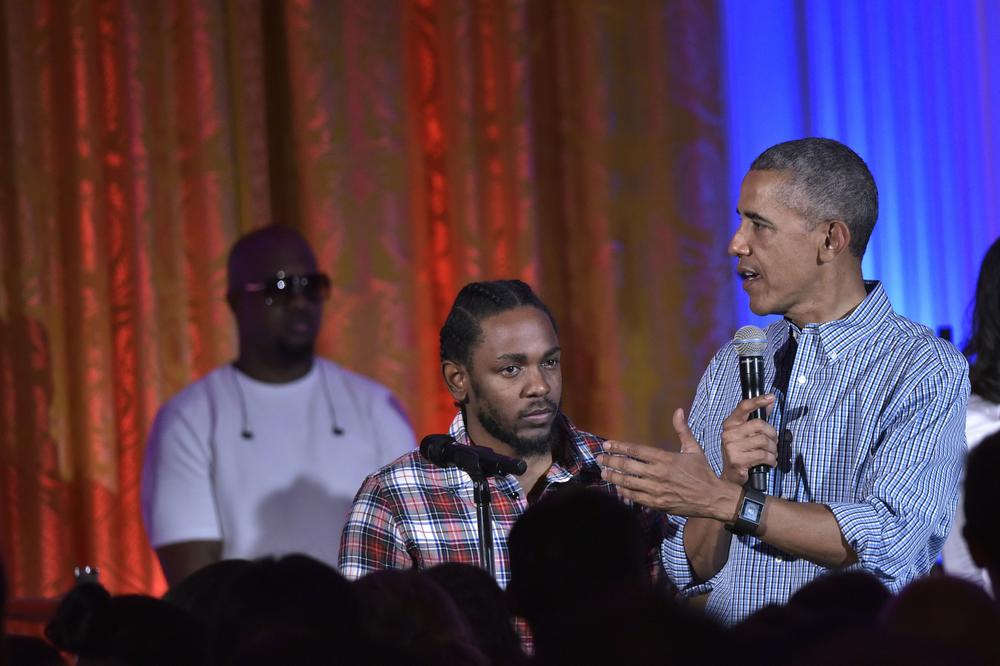

Scholars argue that hip hop can have an empowering effect on youth. While there is misogyny, violence, and drug use in rap music videos and lyrics, hip hop also displays many positive themes of self-reliance, resilience, and self-esteem. These messages can be inspiring for a youth living in poverty. A lot of rap songs contain references to strengthening the African American community promoting social causes. Social workers have used hip hop to build a relationship with at-risk youth and develop a deeper connection with the child. Hip hop has the potential to be taught as a way of helping people see the world more critically, be it through forms of writing, creating music, or social activism. The lyrics of hip hop have been used to learn about literary devices such as metaphor, imagery, irony, tone, theme, motif, plot, and point of view.
Organizations and facilities are providing spaces and programs for communities to explore making and learning about hip hop. An example is the IMP Labs in Regina, Saskatchewan, Canada. Many dance studios and colleges now offer lessons in hip hop alongside tap and ballet, as well as KRS-ONE teaching hip hop lectures at Harvard University. Hip hop producer 9th Wonder and former rapper-actor Christopher "Play" Martin from hip hop group Kid-n-Play have taught hip hop history classes at North Carolina Central University and 9th Wonder has also taught a "Hip Hop Sampling Soul" class at Duke University. In 2007, the Cornell University Library established a Hip Hop Collection to collect and make accessible the historical artifacts of hip hop culture and to ensure their preservation for future generations.
Fashion
Clothing, hair and other styles have been a big part of hip hop's social and cultural impact since the 1970s. Although the styles have changed over the decades, distinctive urban apparel and looks have been an important way for rappers, breakdancers and other hip hop community members to express themselves. As the hip hop music genre's popularity increased, so did the effect of its fashion. While there were early items synonymous with hip hop that crossed over into the mainstream culture, like Run-DMC's affinity for Adidas or the Wu-Tang Clan's championing of Clarks' Wallabees, it wasn't until its commercial peak that hip hop fashion became influential. Starting in the mid- to late 1990s, hip hop culture embraced some major designers and established a new connection with classic fashion. Brands such as Ralph Lauren, Calvin Klein and Tommy Hilfiger all tapped into hip hop culture and gave very little in return. Moving into the new millennium, hip hop fashion consisted of baggy shirts, jeans, and jerseys. As names like Pharrell and Jay-Z started their own clothing lines and still others like Kanye West linked up with designers like Louis Vuitton, the clothes got tighter, more classically fashionable, and expensive.
Politics
The revolution is being televised. In fact, almost every waking second of the revolution is being recorded. Will Smith said it best when he stated, "Racism isn't getting worse, it's getting filmed." Hip-hop leaders like Tupac Shakur might have agreed with the Fresh Prince's statement. 'Pac was the creation of Black Panther pride, a strong-minded soul who looked at the flaws of his nation and spoke for a generation who witnessed those same flaws destroy their communities. 'Pac had no love for the political system in this country, and neither did any of the rap heroes of the 90s.
The relationship between hip-hop and politics has evolved over the last thirty years. Being a child of the 90s, I recall rappers attempting to tear down the walls of the White House from the lawn. Legends like Chuck D and KRS One weren't physically ripping at the White House walls, but the movements they inspired tore at the fabric of America's political system. Nas dreamt of ruling the world, and giving Black people the ultimate freedom. Ice Cube acrimoniously denounced the prison and political systems that ravaged his country. These were our rap heroes, militant and rebellious, a sentiment they imposed on the children of my generation.
Things have changed. No longer are rap stars fighting from the outside. Instead, they've adapted to fight from within. The main difference between the political warriors of 90's hip-hop and today's artists, is, power. Think about the amount of marketing power someone like Diddy has. Think of how much reach and influence someone like Jay-Z or Dr. Dre has. The intelligent moguls that have survived the times learned something from watching all these years. Few things happen in Congress without money and power acting as a motivating factor. Not to discredit the exalted rappers of the 90s, but there have been few times in modern history where burning everything to the ground has worked. On the other hand, political parties, corporate bosses, tech-giant CEOs, and weapons and arms dealers have all influenced policy with large donations and questionable gifts.
Hip-hop and politics started off on two opposite ends of the spectrum, although one begat the other. If proper policies were put in place to help develop poverty-stricken communities in the 50s and 60s, hip-hop may have never been born. Instead, hip-hop was created by the struggle that horrendous politics help create and accommodate. Naturally, to the leaders who pioneered rap music, politicians were abhorrent. Rappers and politicians were immediately poised to be enemies because of their respective ideals, and the tension between hip-hop and politics is well dothcumented throughout history. The F.B.I.'s letter to NWA and former President George H. W. Bush speaking disparagingly about Ice-T's "Cop Killer," are just two examples of the rancorous relationship hip-hop and politics once shared.
Of course, everything isn't perfect in 2018. You would be hard-pressed to find a rapper who supports Donald Trump. In fact, YG's "Fuck Donald Trump" plays at clubs nationwide repeatedly. Instead of reverting to methods that serve as a catalyst for more tension though, many rappers have instead invested in the opposition. Whereas Tupac might have suggested taking it to the streets, rappers like Killer Mike have instead taken it to the boardroom, working with politicians such as Bernie Sanders. Capitol Hill has warmed up to hip-hop culture as well. Politicians such as Marco Rubio, and more famously President Barack Obama, have defended rap culture.
If a time machine took us back to the 90s, and Cube, 'Pac, or Nas were informed that a president was defending rappers, they would never believe it. While I do harbor mythological levels of reverence for the hip-hop revolutionaries of the 90s, the evolution of hip-hop and politics has taught us there is a better way. Now, we can enact change from within.

FYI
Kendrick Lamar's “How Much a Dollar Cost” was Barack Obama's favorite song of 2015 as it stumbled upon subjects like Race,wealthiness and a great deal of self reflection.
For The Full Story.
For The Lyrics.